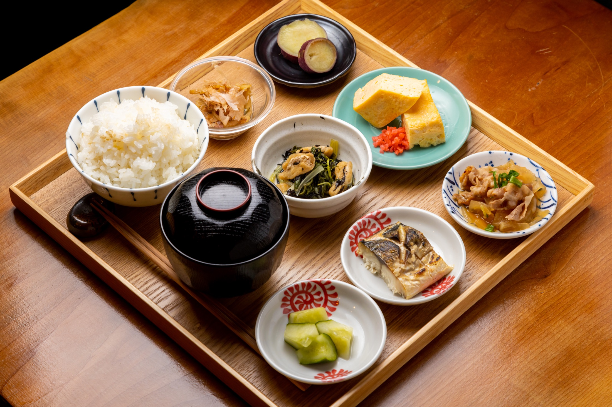

- 日替わり主菜
- 小鉢5品
- 羽釜ごはん
- 味噌汁

四条大宮駅から徒歩5分観光の途中にも、仕事の合間にも。
ランチ定食 1,200円（税込）からごはん・味噌汁・小鉢5品つき。
14席の小さなお店席が埋まる日もあるため、予約がおすすめ。
Concept
食べた物でカラダは作られる。
だからこそ、一度の食事を大切にしてほしい。
外食は、油を摂取する量が増えて野菜が不足しがち。バランスが取りにくい。
コンビニのごはんでは、物足りない。
そんな時に、羽釜で炊いた新潟県のお米とほっとするお味噌汁、できるだけ手作りにこだわった5種類の小鉢と、また食べたくなる主菜でほっとする安心感がある定食をご用意しております。
また、当店でお食事されたお客様より、間食をしなくなったことやカラダが痩せたなどのお声も頂いております。
ぜひ、カラダに優しいごはんや、お昼からも頑張りたい時には、ぜひ当店をご利用下さい。
一度の食事を大切にしたい日に、安心して選べる定食でありたいと思っています。
Name
Roe's Kitchenという名前
Roeは Restore one's energy の頭文字。
日本語に訳すと、英気を養うという意味があります。
私の作る料理を食べて、元気になってほしいという思いからお店の名前を決めました。
食事だけではなく、店主と話す会話だったり、お店の雰囲気も含めて、ココロもカラダも元気になってくれると嬉しいです。
また、お家でお料理をされている大人の方が普通に思う「たまには、誰かの作ったごはんが食べたい」という願いを叶えられるお店でありたいとも願っています。
お料理は、買い物、作る、後片付けなど、想像以上に体力と時間を使います。そういった方々に利用してもらえるととても嬉しいです。
Reservation
席は14席。ご予約が確実です
InstagramのDMより、お名前・人数・ご希望日時をお送りください。
お電話（075-496-5887）でのお問い合わせも承ります。
営業時間中は返信が遅れる場合があります。
InstagramのDMで予約するAfter Lunch
食べた後に、少し整う。
回復店名のRoeは "Restore one's energy"。食事で元気を取り戻す、が店の原点。
安心だしは毎朝、小鉢は毎日手づくり。何が入っているか分かる食事。
満足感主菜、小鉢、羽釜ごはん、味噌汁。量ではなく品数で満たす定食。
軽さ食べたあと眠くならない。午後からも軽く動ける昼ごはん。
After 1pm
13時すぎが、ねらい目です。
混雑が落ち着いて、店内はゆったり。
食後に自家製プリンやアイスクリーム、コーヒーをつけて、少し長い昼休みを。お食事と一緒のご注文で、デザートは100円引きです。
四条大宮で、急がず昼ごはんを食べたい日にどうぞ。
Dinner
夜も、ちゃんとした定食を。
仕事終わりにも、重たすぎない定食を。
夜は昼の定食メニューをベースに、ワンドリンク制でご利用いただけます。
夜営業
火曜日・水曜日・木曜日 18:00〜21:00（L.O. 20:30）
月曜日・金曜日・土曜日・日曜日・祝日の夜営業はありません。
For Visitors
Home-style Japanese set meals in Kyoto.
Roe's Kitchen is a small home-style Japanese restaurant near Omiya Station and Shijo-Omiya. We serve teishoku set meals with rice, miso soup, seasonal side dishes, and a daily main dish.
Rice is cooked in a traditional hagama iron pot, and our miso soup is made with dashi broth prepared fresh every morning.
It is a good choice when you want a calm, balanced meal in Kyoto, not just snacks or drinks.
Nearest stationsAbout 5 minutes from Hankyu Omiya Station and Randen Shijo-Omiya Station.
LunchTuesday to Friday 11:30-14:30, Saturday 11:30-16:00.
DinnerTuesday, Wednesday, Thursday 18:00-21:00. One drink order is required at dinner.
ReservationReservations are accepted by Instagram DM. Please send date, time, number of guests, and your name.
Vegetarian / AllergiesDishes change daily. Please message us on Instagram in advance and we will do our best.
News
お知らせ
営業日、臨時休業、日替わりメニューなどの最新情報を掲載しています。
FAQ
よくある質問
Roe's Kitchenはどんなお店ですか？
京都・四条大宮にある定食屋です。羽釜ごはん、味噌汁、手づくり小鉢、日替わりのおかずを中心に、毎日食べても重くない定食を提供しています。
ひとりでも利用できますか？
はい。おひとりでも利用しやすいお店です。近隣で働く方の昼ごはん、京都観光中の食事、仕事終わりの夜ごはんにも使いやすい雰囲気です。
ランチの営業時間は？
火曜日から金曜日は11:30〜14:30（L.O. 14:00）、土曜日は11:30〜16:00（L.O. 15:00頃）です。月曜日・日曜日・祝日は定休日です。
夜も定食を食べられますか？
はい。火曜日・水曜日・木曜日の18:00〜21:00に夜定食を提供しています。昼の定食メニューをベースに、夜はワンドリンク制です。
予約なしでも入れますか？
空席があればご利用いただけますが、席数が限られているため事前予約がおすすめです。InstagramのDMよりご希望日時・人数・お名前をお送りください。
Is English support available?
Simple English guidance is available on this website. For reservations, please send a direct message on Instagram with your date, time, number of guests, and name.
ベジタリアンやアレルギー対応はできますか？
内容は日替わりのため、対応可否は事前にInstagramのDMでご相談ください。できる限り確認いたします。
観光中でも行きやすいですか？
はい。阪急大宮駅、京福四条大宮駅から徒歩約5分です。京都中心部で、家庭的な定食を食べたい観光客の方にもご利用いただけます。
Reservation
ご予約について
ご予約はInstagramのダイレクトメッセージで承っています。
ご希望日時・人数・お名前をお送りください。席は14席のため、来店前のご予約が確実です。
DM例
7月10日 12:00 / 2名 / 山田
Example: July 10, 12:00 / 2 guests / Yamada
営業時間中は返信が遅れる場合があります。お電話（075-496-5887）でのお問い合わせも承ります。
InstagramのDMで予約するShop Info
店舗情報
まずはGoogleマップで場所と営業情報をご確認ください。営業日の最新情報はInstagramでもお知らせしています。
- 店名
- Roe's Kitchen（ロエズキッチン）
- 住所
- 〒600-8388
京都府京都市下京区坊門町833番地7 イツワマンション103 - アクセス
- 阪急京都線「大宮駅」より徒歩約5分
京福嵐山本線「四条大宮駅」より徒歩約5分 - ランチ
- 火〜金 11:30〜14:30（L.O. 14:00）
土 11:30〜16:00（L.O. 15:00頃） - 夜営業
- 火・水・木 18:00〜21:00（L.O. 20:30）
夜はワンドリンク制です。 - 定休日
- 月曜日・日曜日・祝日
- 電話
- 075-496-5887